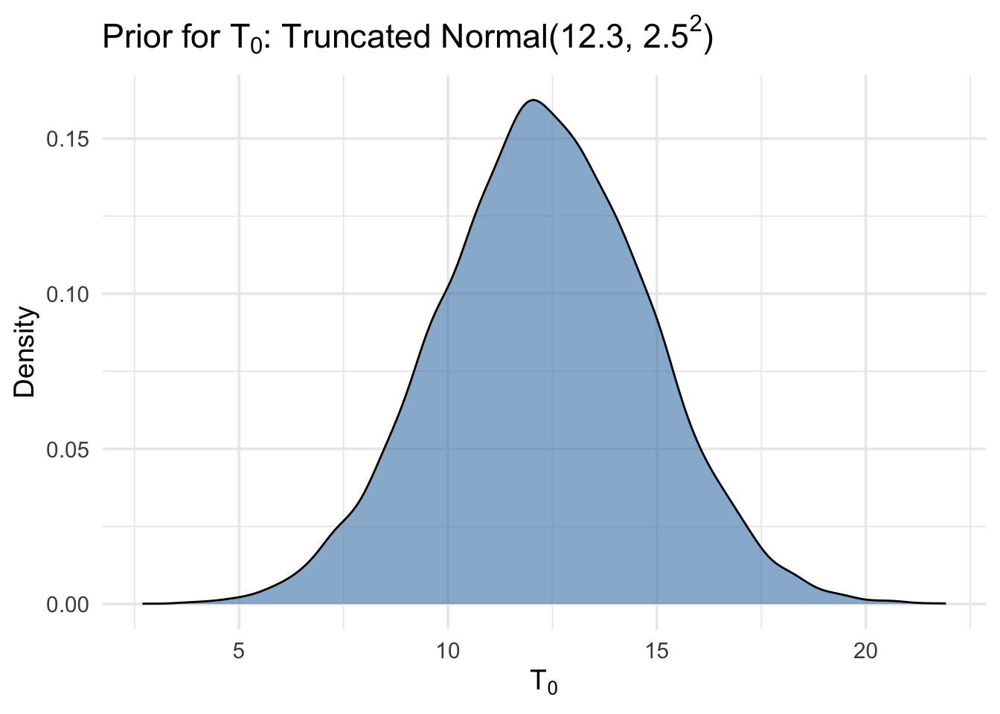
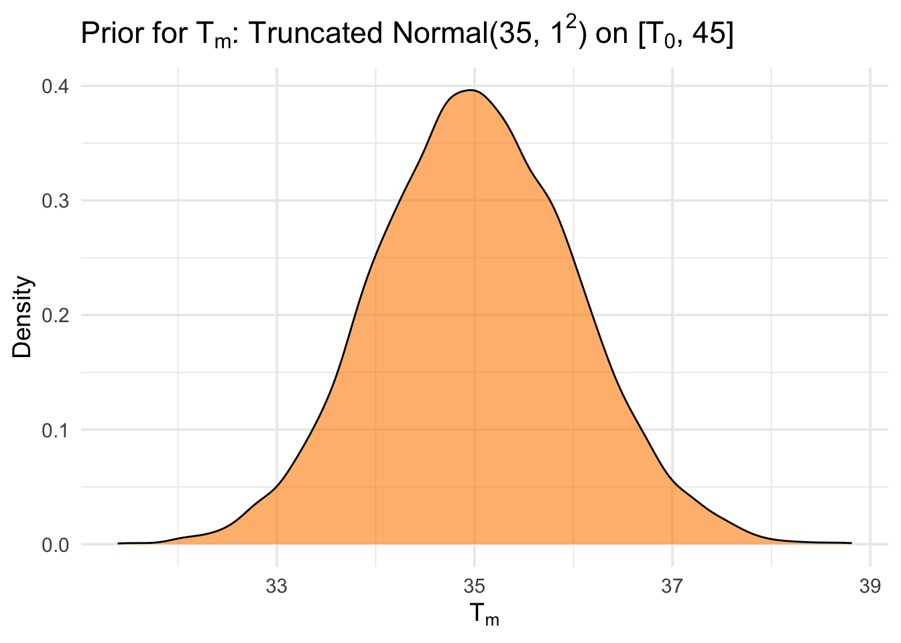
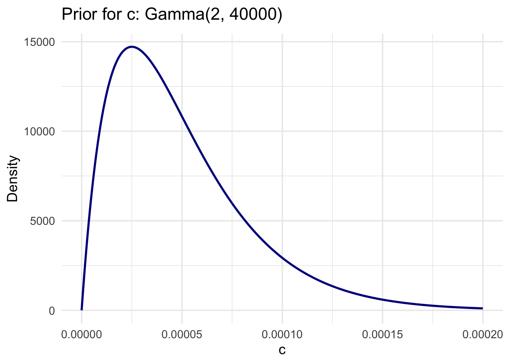
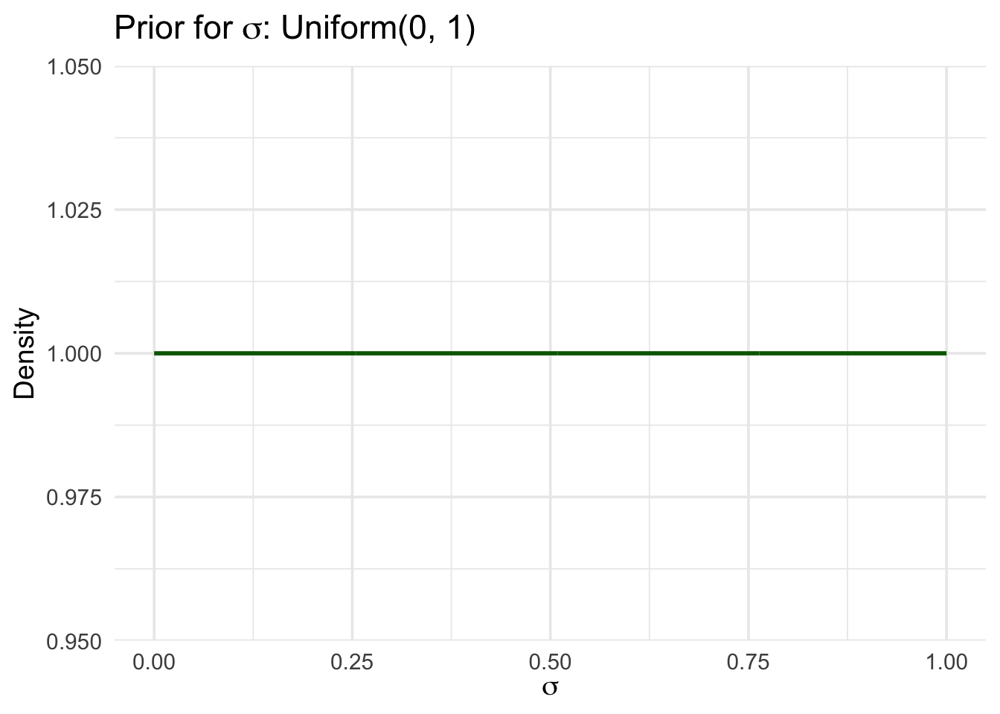
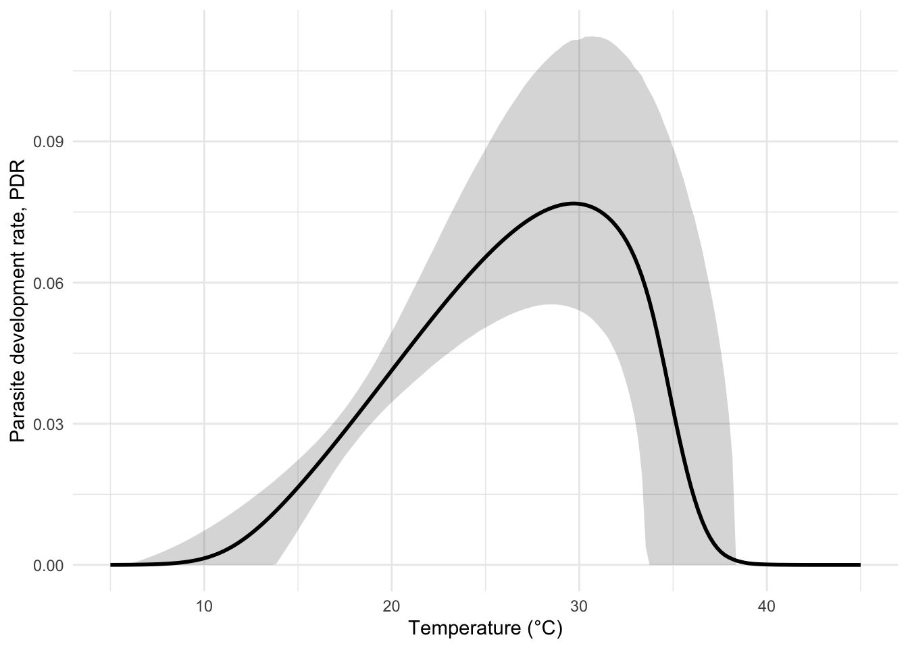
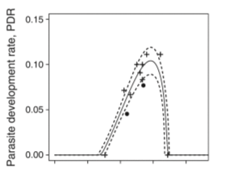

Abstract
Predicting how diseases like malaria spread is a big challenge, especially as climate change shifts global temperature patterns. A key part of this prediction involves understanding how temperature affects different biological traits of mosquitoes and the parasites they carry — for example, how quickly mosquitoes develop (MDR), how fast the malaria parasite matures inside them (PDR), or how often mosquitoes bite humans. These temperature-sensitive traits are used to calculate something called the basic reproduction number, or R_0, which tells us how easily a disease can spread in a population.
The problem is that reliable data for these traits — especially at different temperatures — is limited and often noisy. Instead of drawing a single best-fit curve through the data, the paper we are following uses a Bayesian approach with a technique called Markov Chain Monte Carlo (MCMC) to model the uncertainty. This method creates a range of possible trait curves, not just one, and gives us a clearer picture of how confident we are in the estimates.
1. Data Collection
The authors assembled two types of datasets:
- Main data: Laboratory data under constant temperature, focused on Anopheles gambiae and Plasmodium falciparum. These data were only available for three traits mosquito development rate (MDR), egg-to-adult survival (pEA), and adult mosquito mortality (\(\mu\)). For other traits ideal data, the researcher used data from related species.
- Prior data: A broader set that included similar traits from related species and less controlled experiments. This dataset was used to construct informative priors in the Bayesian models.
Plasmodium Falciparum (parasite)
Anopheles Gambiae (mosquitoes)
2. Bayesian Inference Workflow
In this study, Bayesian inference is used to estimate the thermal responses of individual biological traits that drive malaria transmission. The goal is to determine how key mosquito and parasite traits vary with temperature, and ultimately, how this affects the basic reproduction number R_0.
The Bayesian approach proceeds in three major steps:
1. Define a Likelihood Function
For each biological trait (e.g., mosquito development rate, parasite development rate), a thermal response curve—either a Brière (asymmetric) or quadratic (symmetric) function—is chosen to describe how the trait changes with temperature. The observed data are then modeled as arising from a truncated normal distribution centered around this function, with lower truncation at zero to reflect biological constraints (e.g., traits like development rate cannot be negative). For traits that are probabilities (e.g., vector competence), a binomial likelihood is used if raw count data are available.
2. Specify Prior Distributions
Prior distributions are selected for the parameters of the thermal response functions, including biologically motivated temperature bounds (e.g., 0°C–45°C). Initially, uninformative priors are used to allow the data to dominate the inference. Later, informative priors are constructed by fitting the model to a broader prior dataset, and then summarizing the resulting posterior estimates to inform the main analysis. This two-step prior construction helps stabilize the inference when main data are sparse or noisy.
3. Sample from the Posterior via MCMC
Once likelihood and priors are specified, inference proceeds by generating posterior samples using Markov Chain Monte Carlo (MCMC) techniques such as JAGS. These samples represent plausible combinations of parameter values given both the prior knowledge and the observed data. From these, the posterior mean curves and credible intervals (e.g., 95% HPD bands) are derived to quantify uncertainty.
2.1 Likelihood Definition
We will use the parasite deveolpment rate (PDR) as an illustration of the general workflow. According to the paper, researchers assumed that trait values vary nonlinearly with temperature and exhibit a unimodal, asymmetric pattern. This biological response was modeled using a Brière function, a common choice for temperature-dependent traits that increase sharply, peak at an intermediate temperature, and decline at high temperatures:
\[f(T) = c \cdot T \cdot (T - T_0) \cdot \sqrt{T_m - T}, \quad \text{for } T_0 < T < T_m\] Here: - T is the temperature (°C), - \(T_0\) is the lower developmental threshold, - \(T_m\) is the upper thermal limit, - c is a scaling constant.
To connect this deterministic curve to the observed data, we assume that each observed PDR value \(Y_i\) (e.g., from a lab experiment) is a noisy realization of the theoretical value \(f(T_i)\), where \(T_i\) is the temperature at which the observation was recorded. This noise is modeled using a truncated normal distribution, ensuring all simulated values remain biologically meaningful (i.e., non-negative):
\[Y_i \sim \text{Normal}\left(f(T_i), \sigma^2\right) \quad \text{truncated at } 0\]
2.2 Prior Distribution
In the Bayesian framework, prior distributions express our beliefs about the parameters before seeing the data. For the parasite development rate (PDR), the model includes four parameters: the lower thermal limit \(T_0\), upper thermal limit \(T_m\), a scaling constant c, and a standard deviation \(\sigma\) representing observation noise.
Based on biological constraints and prior studies (as described in the paper and Appendix A.3), the following priors were chosen:
- \(T_0\) (lower bound of development): We assume development does not occur below roughly 5°C. So we used a truncated normal prior: \(T_0 \sim \text{Normal}(12.3, 2.5^2) \text{ truncated at } [0, ]\)

- \(T_m\) (upper limit of development): Mosquitoes and malaria parasites typically die or stop developing near 40°C. We used: \(T_m \sim \text{Normal}(35, 1.0^2) \text{ truncated at } [T_0, 45]\)

- c (scaling parameter of the Brière function): The scaling constant c controls the overall height of the thermal curve. Since it must be positive and is hard to predict precisely, we used a weakly informative gamma prior: \(c \sim \text{Gamma}(2, 40000)\)
Warning: Using `size` aesthetic for lines was deprecated in ggplot2 3.4.0.
ℹ Please use `linewidth` instead.
I honetly don’t know why we choose this but just based on the graph this puts most of the prior mass near zero but allows a long right tail.
- \(\sigma\) (standard deviation of noise): We assume the variability in the observations is positive but small. So: \(\sigma \sim \text{Uniform}(0, 1)\)

2.3 Posterior Sampling via MCMC
Mathematically, Bayes’ theorem tells us: \(\text{Posterior} \propto \text{Likelihood} \times \text{Prior}\) But in practice, this product cannot be simplified or integrated analytically, especially when our model is nonlinear (like the Brière function for PDR) and high-dimensional.
This is where Markov Chain Monte Carlo (MCMC) comes in as we mentioned before.
The Tool: JAGS
library(rjags)Loading required package: codaLinked to JAGS 4.3.2Loaded modules: basemod,bugsTo estimate the posterior, we used JAGS (Just Another Gibbs Sampler). It allows us to simulate draws from the posterior distribution, even when the model is complex and has truncated or nonlinear components.
In our case, we used MCMC to sample from the joint posterior of the four parameters:\(T_0, T_m, c, \sigma\)
The Process:
We ran 3 parallel chains to ensure convergence from different starting points. - Each chain ran for 5000 iterations, with a 1000-iteration burn-in period to discard the early “warm-up” samples. - In total, this gave us 12,000 posterior samples (3 chains × 4000 samples each).
The JAGS output gave us: - Posterior means (best estimate for each parameter) - 95% credible intervals (uncertainty) - Diagnostics like effective sample size and trace plots
These samples allow us to: - Estimate the PDR curve across temperature - Quantify uncertainty (via credible bands) - Propagate this uncertainty into the final R_0 calculation # Inference in Bayesian framework
Usually proceed in three steps.
- A likelihood is defined for each type of data.
- Appropriate prior distributions are determined.
- Samples from the posterior distribution of hte parameters via MCMC.
library(rjags)
library(tidyverse)── Attaching core tidyverse packages ──────────────────────── tidyverse 2.0.0 ──
✔ dplyr 1.1.4 ✔ stringr 1.5.1
✔ forcats 1.0.0 ✔ tibble 3.2.1
✔ lubridate 1.9.4 ✔ tidyr 1.3.1
✔ purrr 1.0.2
── Conflicts ────────────────────────────────────────── tidyverse_conflicts() ──
✖ dplyr::filter() masks stats::filter()
✖ dplyr::lag() masks stats::lag()
ℹ Use the conflicted package (<http://conflicted.r-lib.org/>) to force all conflicts to become errorslibrary(here)
# Load data
mosquitoes1 <- readxl::read_excel(here("data", "the_one_we_need.xlsx"))New names:
• `` -> `...10`# Filter and prepare PDR data
pdr_data <- mosquitoes1 %>%
filter(OriginalTraitName == "EIP (extrinsic incubation period)",
!is.na(Interactor1Temp),
!is.na(OriginalTraitValue)) %>%
mutate(
temp = as.numeric(Interactor1Temp),
pdr = 1 / as.numeric(OriginalTraitValue)
) %>%
arrange(temp)
# Define JAGS model string
jags_model <- "
model {
for (i in 1:N) {
pdr[i] ~ dnorm(mu[i], tau)
mu[i] <- c * temp[i] * (temp[i] - T0) * sqrt(Tm - temp[i])
}
# Priors (informative)
T0 ~ dnorm(14, 1 / (3.5^2))
tm ~ dgamma(14.7, 3.1)
Tm <- 31 + tm
c ~ dexp(100)
# Likelihood precision
tau <- pow(sigma, -2)
sigma ~ dunif(0, 10)
}
"
# Bundle data for JAGS
data_jags <- list(
temp = pdr_data$temp,
pdr = pdr_data$pdr,
N = nrow(pdr_data)
)
# Initial values
inits <- function() {
list(T0 = 14, tm = 5, c = 0.001, sigma = 1)
}
# Parameters to monitor
params <- c("T0", "Tm", "c", "sigma")
# Run the JAGS model
model <- jags.model(textConnection(jags_model), data = data_jags, inits = inits, n.chains = 3)Compiling model graph
Resolving undeclared variables
Allocating nodes
Graph information:
Observed stochastic nodes: 8
Unobserved stochastic nodes: 4
Total graph size: 56
Initializing modelupdate(model, 1000) # Burn-in
samples <- rjags::coda.samples(model, variable.names = params, n.iter = 4000)
# Summarize posterior
summary(samples)
Iterations = 2001:6000
Thinning interval = 1
Number of chains = 3
Sample size per chain = 4000
1. Empirical mean and standard deviation for each variable,
plus standard error of the mean:
Mean SD Naive SE Time-series SE
T0 1.012e+01 2.186e+00 1.996e-02 1.024e-01
Tm 3.568e+01 1.241e+00 1.133e-02 1.806e-02
c 5.625e-05 1.756e-05 1.603e-07 7.750e-07
sigma 6.881e-03 2.968e-03 2.709e-05 1.021e-04
2. Quantiles for each variable:
2.5% 25% 50% 75% 97.5%
T0 5.424e+00 8.715e+00 1.026e+01 1.164e+01 1.402e+01
Tm 3.355e+01 3.481e+01 3.559e+01 3.645e+01 3.838e+01
c 3.225e-05 4.424e-05 5.320e-05 6.435e-05 9.909e-05
sigma 3.567e-03 4.973e-03 6.152e-03 7.905e-03 1.464e-02library(ggplot2)
library(dplyr)
library(coda)
library(tidyr)
# Step 1: Extract summary statistics
summary_stats <- summary(samples)
post_means <- summary_stats$statistics[, "Mean"]
T0 <- post_means["T0"]
Tm <- post_means["Tm"]
c_param <- post_means["c"]
# Step 2: Define the Brière function
briere <- function(T, T0, Tm, c) {
out <- c * T * (T - T0) * sqrt(Tm - T)
out[T <= T0 | T >= Tm] <- 0
return(out)
}
# Step 3: Generate prediction ribbon from posterior draws
posterior_df <- do.call(rbind, samples)
temps <- seq(5, 45, length.out = 200)
pred_matrix <- apply(posterior_df, 1, function(row) {
briere(temps, row["T0"], row["Tm"], row["c"])
})
pred_summary <- data.frame(
temp = temps,
mean = rowMeans(pred_matrix),
lwr = apply(pred_matrix, 1, quantile, 0.025),
upr = apply(pred_matrix, 1, quantile, 0.975)
)
# Step 4: Clean observed data
pdr_data_clean <- mosquitoes1 %>%
filter(OriginalTraitName == "parasite development rate (1/EIP)") %>%
mutate(
temp = as.numeric(Interactor1Temp),
PDR = as.numeric(OriginalTraitValue),
species_marker = case_when(
Interactor1Species == "gambiae" ~ "An. gambiae",
grepl("falciparum", OriginalTraitDef, ignore.case = TRUE) ~ "Other anopheline",
TRUE ~ "Other"
),
shape = case_when(
species_marker == "An. gambiae" ~ 19, # solid circle
species_marker == "Other anopheline" ~ 3, # plus
TRUE ~ 8 # star
)
) %>%
filter(!is.na(temp), !is.na(PDR))
# Step 5: Plot
ggplot() +
geom_ribbon(data = pred_summary, aes(x = temp, ymin = lwr, ymax = upr), alpha = 0.2, linetype = "dashed") +
geom_line(data = pred_summary, aes(x = temp, y = mean), size = 1) +
geom_point(data = pdr_data_clean, aes(x = temp, y = PDR, shape = species_marker), size = 2) +
scale_shape_manual(values = c("An. gambiae" = 19, "Other anopheline" = 3, "Other" = 8)) +
labs(
x = "Temperature (°C)",
y = "Parasite development rate, PDR",
shape = "Species"
) +
theme_minimal()
Here we finally reproduced the posterior for PDR: )
